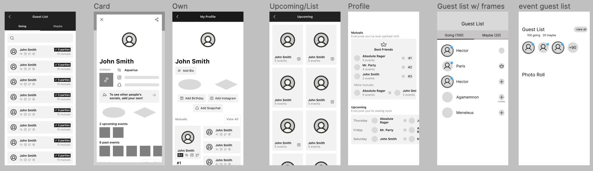
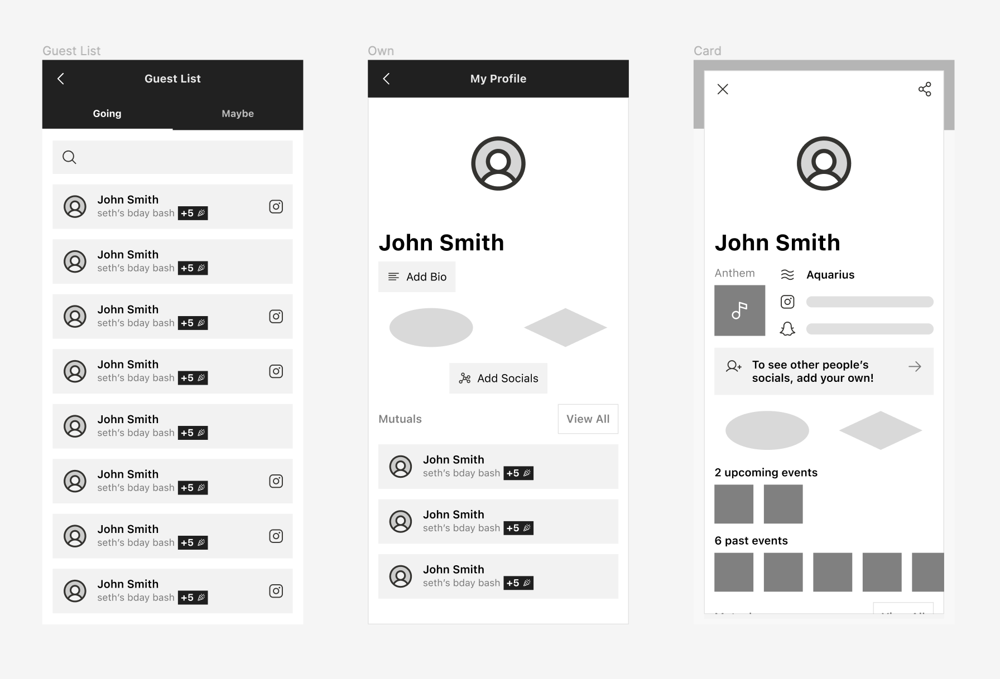

Amazon • Amazon Amp - Find Your Wavelength
Introduction
As part of a course on User Interface and User Experience, we had a group assignment where we were worked with a start up on designing and prototyping new features. When my group of four saw Partiful was one of the companies we could work with for our UI/UX final project, we were immediately interested. We use Partiful already; it's quickly becoming one of the go-to event-planning apps on campus.
The problem we signed up to work on was the profiles screen: specifically "how can we encourage users to fill out their profiles?" This made a lot of sense as a question, since we, in fact, had not filled out ours.
It turned out to be a challenging question, but one which pushed us towards a lot of creative ideas throughout the process below.

Wireframes
Our primary objective was incentivizing users to complete their profile with a photo and more information. We focused on two avenues to achieve this:
- Adding more calls to action and paths to direct users towards editing their profile
- Emphasizing the social connectivity of the platform with the assumption that if you feel like people are actually looking at your profile, you are more likely to care about how it looks.
For our first objective we added more customizable features since we believe that if people want to edit or fill out one feature on their profile they are more likely to fill out more things since they are already on their profile. Some new features we designed to achieve this included:
- "Party anthem" module on the profile page. A fun feature that can help bring people to the edit profile page
- Rebranding birthday month as horoscope on profile page.This feels less revealing of personal info and is more interesting to know
- Adding complete check mark on profile that can unlock new customization features
- Including buttons prompting the user to add socials by default when viewing the user's own profile
- Add new customization options for profile background (similar to event page)
We emphasized our second objective by making the Mutuals features more visible on people's profiles and adding an upcoming events section where you can view future mutuals.
User Interview Summary
After our initial wireframes inspired by our group brainstorm we wanted to get some external feedback from users of Partiful. Since our demographic is the target audience for Partiful, I spearheaded the user inteview component of our process in order to make sure our designs were well researched and grounded in what users will respond to.
From a group interview as well as some informal one-on-one interviews, our main takeaways were:
- No one we talked to had filled out their profile
- Many people didn't even realize they had a profile or didn't remember ever being prompted to add a photo
- They didn't understand why adding more information was necessary
When we asked about reasons people could be more compelled to include more information some prominent responses included:
- If photos were required in order to see the guest list/reply. Or if other important features were blocked - however "this would be super annoying"
- If they had a good reason. We discussed framing socials as a way to connect with people after a party and emphasizing the importance of photos for identifying people who are coming
- If everyone else had a photo/filled out profile
Updated Wireframes
Based on initial feedback from Partiful, user interviews, and classmates we improved our wireframe to be cleaner, prioritize the most relevant info, and add more calls to action.
